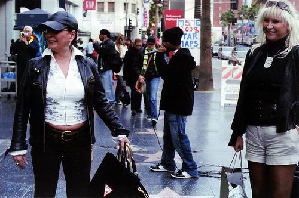

Synthesizing spoken descriptions of images
Xinsheng Wang, Justin van der Hout, Jihua Zhu, Mark Hasegawa-Johnson, Odette Scharenborg
Introduction
This work proposes a new model, referred to as the show and speak (SAS) model that, for the first time, is able to directly synthesize spoken descriptions of images, bypassing the need for any text or phonemes. The basic structure of SAS is an encoder-decoder architecture that takes an image as input and predicts a sequence of spectrograms of speech that describes this image. The final speech audio is obtained from the predicted spectrogram via WaveNet. Extensive experiments on the public benchmark database Flickr8k demonstrate that the proposed SAS is able to synthesize natural spoken descriptions for images, indicating that synthesizing spoken descriptions for images while bypassing text and phonemes is feasible.
Framework

Results
- Good Results:

|

|
- Synthesized speech that can not describe the image well:
|  |

|
- Synthesized speech gets worse throughout the spoken caption:

|
- Synthesized speech is unintelligible.:

|

|
Database and Source Code
Database
- Flickr8k database for Image2Speech. All of the raw images, bottom-up features, speech wave files, speech spectrograms, and split files can be found here.